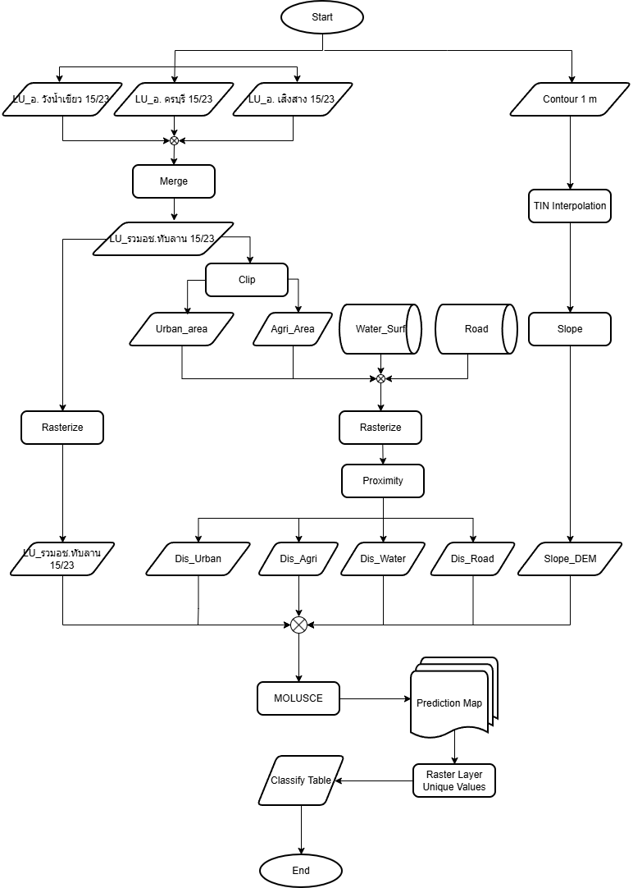

วิธีการศึกษาและขั้นตอนการดำเนินงาน
กระบวนการจัดเตรียมข้อมูลเชิงพื้นที่และแบบจำลองการคาดการณ์การใช้ประโยชน์ที่ดิน (MOLUSCE)
1. แผนผังกระบวนการดำเนินงาน (Workflow Diagram)

ภาพที่ 1:
แผนผังขั้นตอนการวิเคราะห์และคาดการณ์การเปลี่ยนแปลงการใช้ประโยชน์ที่ดินในเขตอุทยานแห่งชาติทับลาน
2. รายละเอียดขั้นตอนการวิเคราะห์ข้อมูลตามแผนผัง
ขั้นที่ 1: การเตรียมข้อมูลการใช้ประโยชน์ที่ดินตั้งต้น (Land Use Data Preparation)
- นำเข้าข้อมูลการใช้ประโยชน์ที่ดิน (Land Use) ช่วงปี ค.ศ. 2015 และ 2023 ของทั้ง 3 อำเภอ ได้แก่
LU_อ.วังน้ำเขียว 15/23, LU_อ.ครบุรี 15/23 และ
LU_อ.เสิงสาง 15/23
- นำชั้นข้อมูลทั้ง 3 อำเภอมาผสานรวมกันด้วยคำสั่ง Merge เพื่อให้ได้ชั้นข้อมูลรวมของพื้นที่ศึกษา
LU_รวมอช.ทับลาน 15/23
- แปลงข้อมูลเวกเตอร์ให้เป็นข้อมูลแรสเตอร์ด้วยเครื่องมือ Rasterize
ได้ผลลัพธ์เป็นชั้นข้อมูลแรสเตอร์
LU_รวมอช.ทับลาน 15/23
สำหรับใช้เป็นข้อมูลตั้งต้นในแบบจำลอง
ขั้นที่ 2: การสกัดและวิเคราะห์ปัจจัยด้านระยะห่าง (Proximity Factors)
- นำข้อมูล
LU_รวมอช.ทับลาน 15/23 มาตัดสกัดแยกประเภทด้วยคำสั่ง Clip
เพื่อแยกชั้นข้อมูลพื้นที่ชุมชน (Urban_area) และพื้นที่เกษตรกรรม
(Agri_Area)
- รวบรวมชั้นข้อมูลปัจจัยโครงสร้างพื้นฐานและแหล่งน้ำเพิ่มเติม ได้แก่ ข้อมูลแหล่งน้ำผิวดิน
(
Water_Surf) และโครงข่ายถนน (Road)
- นำปัจจัยทั้ง 4 ชั้นข้อมูลมาแปลงเป็นแรสเตอร์ (Rasterize)
และคำนวณหาระยะห่างเชิงยุคลิดด้วยเครื่องมือ Proximity (Raster Distance)
ได้ผลลัพธ์เป็นปัจจัยระยะห่าง 4 ตัวแปร ได้แก่:
Dis_Urban (ระยะห่างจากพื้นที่ชุมชนและสิ่งปลูกสร้าง)Dis_Agri (ระยะห่างจากพื้นที่เกษตรกรรม)Dis_Water (ระยะห่างจากแหล่งน้ำ)Dis_Road (ระยะห่างจากโครงข่ายถนน)
ขั้นที่ 3: การวิเคราะห์ปัจจัยด้านกายภาพและความลาดชัน (Topographic & Slope Factor)
- นำเข้าข้อมูลเส้นชั้นความสูงความละเอียด 1 เมตร (
Contour 1 m) ของพื้นที่ศึกษา
- ประมาณค่าเชิงพื้นที่เพื่อสร้างแบบจำลองความสูงเชิงเลขด้วยวิธี TIN Interpolation
- นำข้อมูลความสูงที่ได้มาคำนวณหาความลาดชันด้วยเครื่องมือ Slope
ได้ผลลัพธ์เป็นชั้นข้อมูลแรสเตอร์ความลาดชัน (
Slope_DEM)
ขั้นที่ 4: การจำลองและคาดการณ์การใช้ประโยชน์ที่ดิน (MOLUSCE & Classification)
- นำข้อมูลตั้งต้น
LU_รวมอช.ทับลาน 15/23 ร่วมกับตัวแปรขับเคลื่อนเชิงพื้นที่ทั้ง 5 ปัจจัย
(Dis_Urban, Dis_Agri, Dis_Water, Dis_Road และ
Slope_DEM) เข้าสู่ปลั๊กอิน MOLUSCE (Modules for Land Use Change Simulations)
ในโปรแกรม QGIS
- ประมวลผลเมทริกซ์การเปลี่ยนแปลงและจำลองการคาดการณ์ล่วงหน้า
ได้ผลลัพธ์เป็นแผนที่คาดการณ์การใช้ประโยชน์ที่ดินตามช่วงปี (Prediction Map)
- นำแผนที่คาดการณ์ที่ได้มาสรุปค่าพิกเซลรายคลาสด้วยเครื่องมือ Raster Layer Unique Values
เพื่อจัดทำตารางสรุปสถิติพื้นที่แต่ละประเภท (Classify Table) สำหรับนำเสนอผลบนระบบ Web GIS